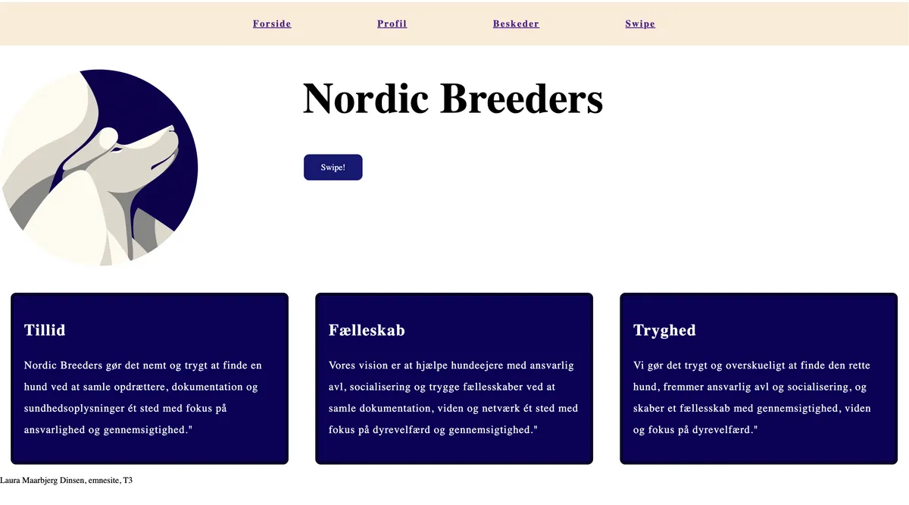
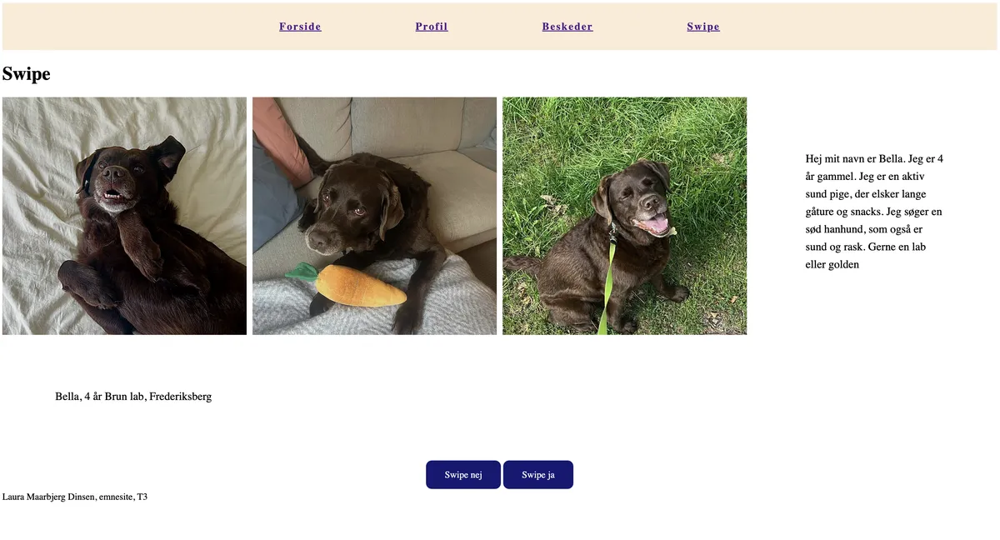
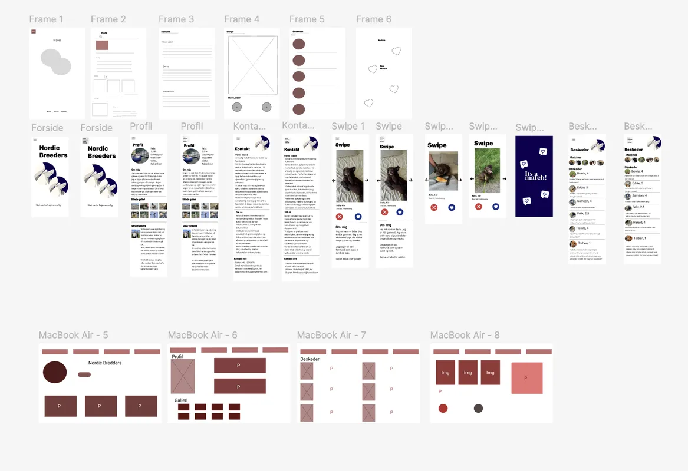

T3 Grundlæggende UX / UI
I tema 3 lavede vi en hjemmeside fra bunden, ud fra et selvvalgt emne med fokus på UI/UX. Under temaet arbejdede vi med at skabe en løsning, der både var visuelt attraktiv og brugervenlig. Det handlede om at designe en hjemmeside med visuelle elementer, samtidig med at fokusere på brugerens oplevelse.
Derudover blev vi introduceret til forskellige testmetoder, som kunne hjælpe os gennem designprocessen, herunder tests af brugervenlighed og funktionalitet. Disse metoder gjorde det muligt at indsamle feedback og løbende forbedre hjemmesidens design og brugeroplevelse.

Opgave, proces og udførsel
I dette tema arbejdede jeg fra idé til færdigt website. Jeg startede med brainstorming og udvælgelse af emner, hvorefter vi lavede moodboards, brugertyper og user stories for at forstå målgruppen bedre.Opgaven gik ud på at designe og
udvikle et website om et valgfrit emne. Jeg startede med research, brainstorming og idéudvikling, hvorefter jeg udarbejdede moodboards, user stories og målgruppeanalyse.
Derefter udviklede jeg både lo-fi og hi-fi prototyper, samt wireframes til både desktop og mobile first. Jeg arbejdede med styling, farver og layout for at skabe et brugervenligt design, der efterfølgende blev kodet. Slutproduktet testede
jeg til sidst med 5-sekunders test og Lighthouse for at forbedre brugeroplevelsen og funktionaliteten.

Procesdokumentation
